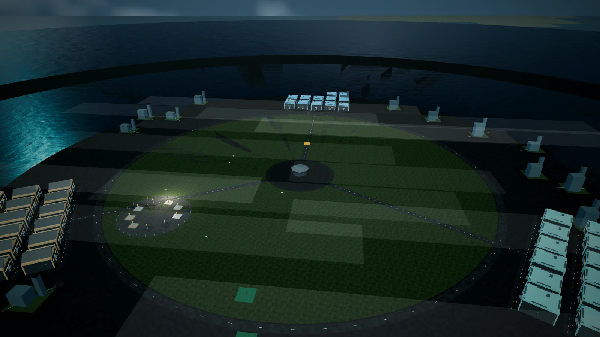

Campus and halls
Every trade hall stands on the campus green, with rooms you can walk.
web/design_kit.py
Tokens and templates any page builder can import. Every template below is shown in the dark and the light palette with the exact call that drew it. Footage is house-made: recorded frame by frame from this build's own 3D campus (see media/registry/media.json). Icons are Lucide, vendored under the ISC licence.
design_kit.heroA full-bleed opening band. The video is muted, loops, and sits under a scrim that keeps the text above AA contrast on every frame; the pause control is a real button, and a reader who asked for reduced motion gets the poster and never motion. Until a hero-quality clip is rendered this shows campus-green-crane-up, which is NOT hero quality: shadow striping on the green and the water once the camera climbs past about 120 m (second half of the move); not hero quality - re-shoot lower.
Trade Craft Academy
Walk the campus before you walk the site
A 3D training campus, simulator seats and a map of the network - in the browser, on a phone, offline once loaded.
Trade Craft Academy
Walk the campus before you walk the site
A 3D training campus, simulator seats and a map of the network - in the browser, on a phone, offline once loaded.
from design_kit import kit_css, KIT_JS, hero
hero({'eyebrow': 'Trade Craft Academy',
'title': 'Walk the campus before you walk the site',
'lede': 'A 3D training campus, simulator seats and a map of the network - in the '
'browser, on a phone, offline once loaded.',
'actions': [{'text': 'Open the campus',
'href': 'trade_craft_3d.html',
'kind': 'primary'},
{'text': 'See the map', 'href': 'trade_craft_geomap.html', 'kind': 'ghost'}],
'video': {'webm': 'media/broll/campus-green-crane-up.webm',
'mp4': 'media/broll/campus-green-crane-up.mp4',
'poster': 'media/broll/campus-green-crane-up-poster.jpg',
'credit': 'Footage: Campus green, crane-up reveal - recorded from this build',
'pause_label': 'Pause background video',
'play_label': 'Play background video'},
'as_h1': False})design_kit.feature_gridThree to six features, each an icon, a title and one sentence.
Every trade hall stands on the campus green, with rooms you can walk.
Practice a lift or a trench in a seat that scores what you did.
Every campus and site at its own registry coordinates.
Every trade hall stands on the campus green, with rooms you can walk.
Practice a lift or a trench in a seat that scores what you did.
Every campus and site at its own registry coordinates.
from design_kit import kit_css, KIT_JS, feature_grid
feature_grid([{'icon': 'building-2',
'title': 'Campus and halls',
'body': 'Every trade hall stands on the campus green, with rooms you can walk.'},
{'icon': 'hard-hat',
'title': 'Simulator seats',
'body': 'Practice a lift or a trench in a seat that scores what you did.'},
{'icon': 'globe',
'title': 'The network on a globe',
'body': 'Every campus and site at its own registry coordinates.'}])design_kit.stat_bandFigures computed by the CALLER from a registry at build time; each names its source.
from design_kit import kit_css, KIT_JS, stat_band
stat_band([{'value': 11, 'label': 'templates in this kit', 'source': 'web/design_kit.py TEMPLATES'},
{'value': 18, 'label': 'icons vendored', 'source': 'web/vendor/icons/manifest.json'},
{'value': 1, 'label': 'b-roll clips', 'source': 'media/registry/media.json'},
{'value': 7, 'label': 'seconds of footage', 'source': 'media/registry/media.json'}])design_kit.splitMedia on one side, words on the other; stacks on a phone. reverse=True mirrors it.

Recorded here
The Treasure Island campus green and its halls, rising from low over the green to a high three-quarter view. RECORDED from this build (commit 57f497245b0d).
Recorded here
The Treasure Island campus green and its halls, rising from low over the green to a high three-quarter view. RECORDED from this build (commit 57f497245b0d).
from design_kit import kit_css, KIT_JS, split
split({'media_html': '<img src="media/broll/campus-green-crane-up-poster.jpg" alt="The '
'Treasure Island campus green and its halls, rising from low over the '
'green to a high three-quarter view" loading="lazy">',
'eyebrow': 'Recorded here',
'title': 'Campus green, crane-up reveal',
'body': 'The Treasure Island campus green and its halls, rising from low over the green '
'to a high three-quarter view. RECORDED from this build (commit 57f497245b0d).',
'action': {'text': 'Open the 3D campus', 'href': 'trade_craft_3d.html', 'kind': 'ghost'},
'reverse': False})design_kit.timelineNumbered by CSS counters, so the page types no digit.
Find its hall on the campus.
Walk the stations and read the lessons.
Run the simulator and see what it scored.
Your progress stays on your device.
Find its hall on the campus.
Walk the stations and read the lessons.
Run the simulator and see what it scored.
Your progress stays on your device.
from design_kit import kit_css, KIT_JS, timeline
timeline([{'title': 'Pick a trade', 'body': 'Find its hall on the campus.'},
{'title': 'Learn the room', 'body': 'Walk the stations and read the lessons.'},
{'title': 'Take the seat', 'body': 'Run the simulator and see what it scored.'},
{'title': 'Keep the record', 'body': 'Your progress stays on your device.'}])design_kit.ctaOne action, one sentence of why.
The campus opens in the browser; nothing to install.
The campus opens in the browser; nothing to install.
from design_kit import kit_css, KIT_JS, cta
cta({'title': 'Ready to look around?',
'body': 'The campus opens in the browser; nothing to install.',
'action': {'text': 'Open the campus', 'href': 'trade_craft_3d.html', 'kind': 'primary'}})design_kit.calloutkind='limit' is the box that says what something is NOT.
from design_kit import kit_css, KIT_JS, callout
callout({'kind': 'limit',
'title': 'Play, not a credential',
'body': 'Quests, badges and treasures are play. They never enter a completion record '
'and certify nothing.'})design_kit.cardA linked card lifts on hover; without href it is a plain article.
from design_kit import kit_css, KIT_JS, card
card({'icon': 'map',
'title': 'Globe map',
'body': 'Every campus at its registry coordinates.',
'badge': ('Schematic', 'steel'),
'href': 'trade_craft_geomap.html',
'go': 'Open the map'})design_kit.badgeFour tones: steel, amber, muted, ok. For provenance words and states.
from design_kit import kit_css, KIT_JS, badge
badge('Recorded', 'ok') # tones: steel | amber | muted | okdesign_kit.breadcrumbThe last item is the current page (aria-current).
from design_kit import kit_css, KIT_JS, breadcrumb
breadcrumb([('Home', '../index.html'), ('About', 'trade_craft_landing.html'), ('Design kit', None)], "Breadcrumb")design_kit.TOKENSColour, type, spacing, radii and elevation, as custom properties. Contrast ratios are computed from the values at build time.
--dk-plate#12181B--dk-panel#182023--dk-raised#1F292D--dk-line#2B383C--dk-ink#E8EDEC--dk-muted#93A3A6--dk-amber#E8A33D--dk-steel#41C4D4--dk-amber-ink#12181B--dk-link#41C4D4--dk-warn#E8A33D--dk-ok#6FCF97ink on plate15.1:1ink on panel14.0:1ink on raised12.6:1muted on plate6.9:1muted on panel6.3:1amber on plate8.3:1amber on panel7.7:1steel on plate8.6:1steel on panel7.9:1link on panel7.9:1amber-ink on amber8.3:1ok on panel8.7:1--dk-plate#F4F6F6--dk-panel#FFFFFF--dk-raised#EAEFEF--dk-line#D3DCDD--dk-ink#12181B--dk-muted#4E5C5F--dk-amber#8F5500--dk-steel#0B6B78--dk-amber-ink#FFFFFF--dk-link#0B6B78--dk-warn#8F5500--dk-ok#1E7A45ink on plate16.5:1ink on panel17.9:1ink on raised15.4:1muted on plate6.4:1muted on panel7.0:1amber on plate5.6:1amber on panel6.1:1steel on plate5.7:1steel on panel6.2:1link on panel6.2:1amber-ink on amber6.1:1ok on panel5.4:1--dk-t-xs Walk the campus--dk-t-sm Walk the campus--dk-t-md Walk the campus--dk-t-lg Walk the campus--dk-t-xl Walk the campus--dk-t-2xl Walk the campus--dk-t-3xl Walk the campus--dk-t-4xl Walk the campus--dk-s-1 4px--dk-s-2 8px--dk-s-3 12px--dk-s-4 16px--dk-s-5 24px--dk-s-6 32px--dk-s-7 48px--dk-s-8 64px--dk-s-9 96px--dk-r-sm--dk-r-md--dk-r-lg--dk-r-pill--dk-e-1--dk-e-2--dk-e-3